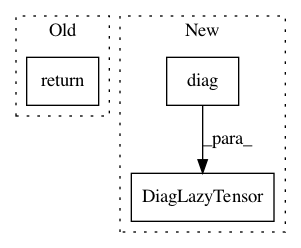

198493be78000034e4ce36d846bda0a82fd0779f,gpytorch/lazy/diag_lazy_tensor.py,DiagLazyTensor,_mul_matrix,#DiagLazyTensor#Any#,65
Before Change
def _mul_matrix(self, other):
if isinstance(other, DiagLazyTensor):
return self.__class__(self._diag * other._diag)
else:
return self.__class__(self._diag * other.diag())
def _prod_batch(self, dim):
After Change
return self.__class__(self._diag * constant.unsqueeze(-1))
def _mul_matrix(self, other):
return DiagLazyTensor(self.diag() * other.diag())
def _prod_batch(self, dim):
return self.__class__(self._diag.prod(dim))
In pattern: SUPERPATTERN
Frequency: 3
Non-data size: 3
Instances
Project Name: cornellius-gp/gpytorch
Commit Name: 198493be78000034e4ce36d846bda0a82fd0779f
Time: 2021-01-16
Author: balandat@fb.com
File Name: gpytorch/lazy/diag_lazy_tensor.py
Class Name: DiagLazyTensor
Method Name: _mul_matrix
Project Name: cornellius-gp/gpytorch
Commit Name: ad18add8ae7da04213813b5675b903bbf4be1ebd
Time: 2021-02-10
Author: wjm363@nyu.edu
File Name: gpytorch/lazy/kronecker_product_added_diag_lazy_tensor.py
Class Name: KroneckerProductAddedDiagLazyTensor
Method Name: _root_inv_decomposition
Project Name: cornellius-gp/gpytorch
Commit Name: ad18add8ae7da04213813b5675b903bbf4be1ebd
Time: 2021-02-10
Author: wjm363@nyu.edu
File Name: gpytorch/lazy/kronecker_product_added_diag_lazy_tensor.py
Class Name: KroneckerProductAddedDiagLazyTensor
Method Name: _root_decomposition